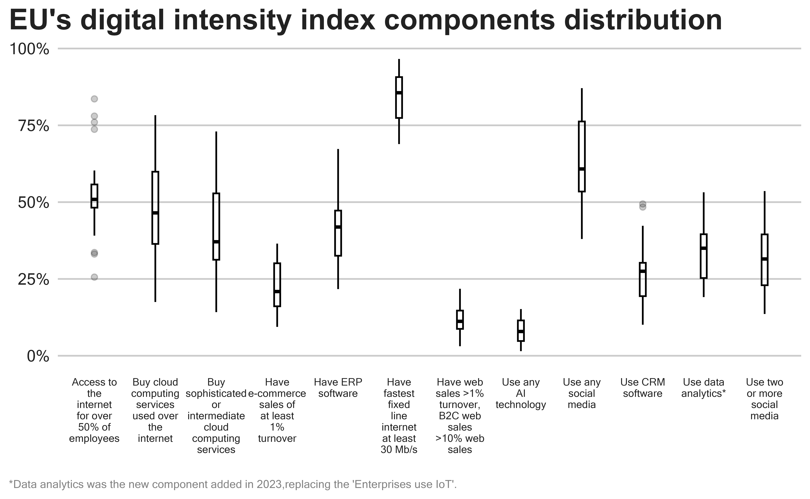
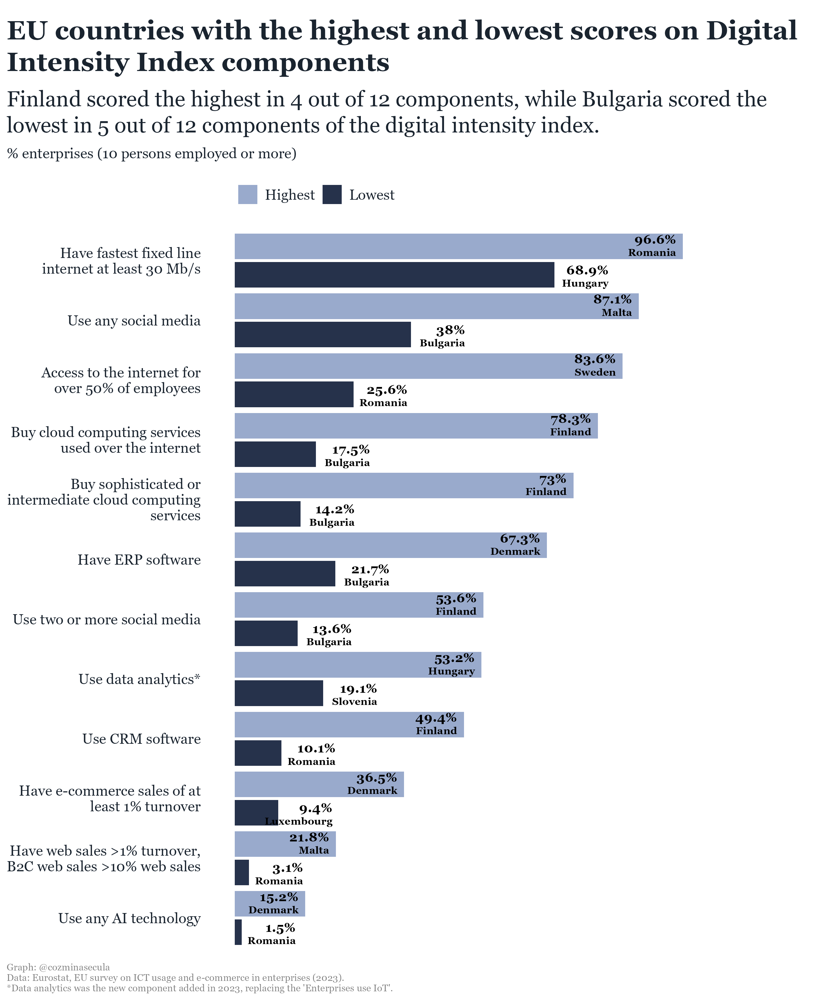

library(DBI)
library(dplyr)
library(tidyverse)
library(DT)
library(extrafont)
library(scales)
library(ggtext)In the previous post on analyzing EU’s Digital Intensity Index, I enumerated the 12 components of the index. As a result of learning more about the index’s components, I was curious to know how the enterprises that participated in the survey performed on each component.
In this post, I analyze the components of the DII index for each EU country, specifically, I will answer the question:
- Which countries rank highest or lowest on the twelve components of the EU’s digital intensity index?
Prerequisites
Load libraries
Connect to the database
Code
Sys.sleep(sleep_default)
con <- DBI::dbConnect(RPostgres::Postgres(),
dbname = 'digital_transformation_of_business',
host = 'localhost',
port = 5432,
user = Sys.getenv("DEFAULT_POSTGRES_USER_NAME"),
password = Sys.getenv("DEFAULT_POSTGRES_PASSWORD"),
bigint = "integer") 1. Build Data Set for Analysis
For this analysis, I use open data provided by Eurostat, the results of the EU survey on ICT usage and e-commerce in enterprises 2023, available in MS-Access format. This format allows me to work with database files and make the data set I need for the analysis.
Code
sql_dataset <- '
SELECT
y."ExpPeriod" AS "Year",
c."ExpCountryCaption" AS "Country",
r."ExpRegionCaption" AS "Region",
i."ExpIndicatorCaption" AS "Indicator",
r."ExpRegion" AS "Geo",
es."ExpEntSizeCaption" AS "EnterpriseSize",
a."ExpActivityCaption" AS "Activity",
u."ExpUnitCaption" AS "Unit",
COALESCE(CAST(dwa."Value" AS decimal) *100, 0) AS "Value",
dwa."Flags" ,
n."Note"
FROM public."DataWithAggregates" dwa
INNER JOIN public."Years" y ON dwa."IdYear" = y."IdYear"
INNER JOIN public."Countries" c ON dwa."IdCountry" = c."IdCountry"
INNER JOIN public."Indicators" i ON dwa."IdIndicator" = i."IdIndicator"
INNER JOIN public."EntSizes" es ON dwa."IdEntSize" = es."IdEntSize"
INNER JOIN public."Activities" a ON dwa."IdActivity" = a."IdActivity"
INNER JOIN public."Regions" r ON dwa."IdRegion" = r."IdRegion"
INNER JOIN public."CustBrkdwns" cb ON dwa."IdCustBrkdwn" = cb."IdCustBrkdwn"
INNER JOIN public."Units" u ON dwa."IdUnit" = u."IdUnit"
INNER JOIN public."Notes" n ON dwa."IdYear" = n."IdYear" AND dwa."IdNote" = n."IdNote"
WHERE y."IdYear" IN (23)
AND c."IdCountry" IN (2,3,4,5,6,7,8,9,10,11,12,13,14,15,16,18,19,20,21,22,23,25,26,27,28,29,30,45)
AND i."IdIndicator" IN (1525, 2256, 315, 1499, 1598, 2347, 1769, 1764, 3124, 2305, 1068, 3122)
AND es."IdEntSize" IN (2578)
AND a."IdActivity" IN (2585)
AND cb."IdCustBrkdwn" IN (2632)
AND u."IdUnit" IN (16)
ORDER BY "Year", "Value"'
sql_dataset_tbl <- as_tibble(dbGetQuery(con,sql_dataset))2. Prepare the Data
2.1 Data Description
Data from the EU survey on ICT (Information and Communication Technologies) usage and e-commerce in enterprises 2023 provided by Eurostat, are collected annually by the National Statistical Institutes and are based on the annual Eurostat model questionnaires on ICT usage and e-commerce in enterprises.
The model questionnaire on ICT usage and e-commerce in enterprises provides a large variety of variables covering among others the following areas:
General information about ICT systems
Access to and use of the internet including mobile use of the internet
e-commerce
e-business including Artificial Intelligence, Data analytics, Cloud computing, Internet of Things, Big data analysis, 3D printing, Robotics, etc.
ICT specialists, training on ICT and e-skills
ICT security
ICT and the environment1.
The structure, data types, and content of the data set.
- The data set includes 822 observations and 11 variables.
- The data type is string (character) for all variables except the
Valuevariable which is of data type numeric (double). - Only the
FlagsandNotevariables are missing values. These variables have values only if there is something special to mention.
Code
glimpse(sql_dataset_tbl)Rows: 822
Columns: 11
$ Year <chr> "2023A00", "2023A00", "2023A00", "2023A00", "2023A00", …
$ Country <chr> "Romania", "Romania", "Romania", "Romania", "Romania", …
$ Region <chr> "Sud-Vest Oltenia", "Sud-Est", "Macroregiunea doi", "No…
$ Indicator <chr> "Enterprises use at least one of the AI technologies: A…
$ Geo <chr> "RO41", "RO22", "RO2", "RO11", "RO21", "RO4", "RO1", "R…
$ EnterpriseSize <chr> "10 persons employed or more", "10 persons employed or …
$ Activity <chr> "All activities, without financial sector", "All activi…
$ Unit <chr> "Percentage of enterprises", "Percentage of enterprises…
$ Value <dbl> 0.1516, 0.4106, 0.6444, 0.7938, 0.8899, 0.9024, 1.0346,…
$ Flags <chr> NA, NA, NA, NA, NA, NA, NA, NA, NA, NA, NA, NA, NA, NA,…
$ Note <chr> NA, NA, NA, NA, NA, NA, NA, NA, NA, NA, NA, NA, NA, NA,…Code
skimr::skim(sql_dataset_tbl)| Name | sql_dataset_tbl |
| Number of rows | 822 |
| Number of columns | 11 |
| _______________________ | |
| Column type frequency: | |
| character | 10 |
| numeric | 1 |
| ________________________ | |
| Group variables | None |
Variable type: character
| skim_variable | n_missing | complete_rate | min | max | empty | n_unique | whitespace |
|---|---|---|---|---|---|---|---|
| Year | 0 | 1.00 | 7 | 7 | 0 | 1 | 0 |
| Country | 0 | 1.00 | 5 | 41 | 0 | 28 | 0 |
| Region | 0 | 1.00 | 4 | 60 | 0 | 84 | 0 |
| Indicator | 0 | 1.00 | 33 | 131 | 0 | 12 | 0 |
| Geo | 0 | 1.00 | 2 | 4 | 0 | 86 | 0 |
| EnterpriseSize | 0 | 1.00 | 27 | 27 | 0 | 1 | 0 |
| Activity | 0 | 1.00 | 40 | 40 | 0 | 1 | 0 |
| Unit | 0 | 1.00 | 25 | 25 | 0 | 1 | 0 |
| Flags | 806 | 0.02 | 1 | 1 | 0 | 1 | 0 |
| Note | 808 | 0.02 | 72 | 92 | 0 | 4 | 0 |
Variable type: numeric
| skim_variable | n_missing | complete_rate | mean | sd | p0 | p25 | p50 | p75 | p100 | hist |
|---|---|---|---|---|---|---|---|---|---|---|
| Value | 0 | 1 | 38.27 | 25.05 | 0.15 | 17.74 | 34.69 | 52.68 | 98.84 | ▇▇▇▃▂ |
Description of variables
The data set contains the following variables:
Year- the year when the survey was conducted (2023)Country- the EU countries (27) + European Union - 27 countries (from 2020)Regionthe regions of each countryGeo- the geographical code for each regionIndicator- the 12 components of the Digital Intensity Index in 2023Enterprise size- 10 persons employed or moreActivity- All activities, without financial sectorUnit- Percentage of enterprisesValue- the value, rounded to 4 decimalsFlags- The flags attached to the value if it is the caseNote- The text of a specific note mentioned if it is the case
Data Cleaning
As we see, there are no necessary missing values to address and the data type is correct for each variable.
The Indicator values are too long to be displayed when visualizing the data and I will change them with a shorter version.
I will exclude the data for regions and keep only data for the 27 countries.
Code
data_cleaned <- sql_dataset_tbl |>
filter(Geo == "_z" &
Country != "European Union - 27 countries (from 2020)") |>
mutate(Value = round(Value, 1),
Indicator_code = case_when(
Indicator == "Enterprises use at least one of the AI technologies: AI_TTM, AI_TSR, AI_TNLG, AI_TIR, AI_TML, AI_TPA, AI_TAR" ~ "Use any AI technology",
Indicator == "Enterprises where web sales are more than 1% of total turnover and B2C web sales more than 10% of the web sales" ~ "Have web sales >1% turnover, B2C web sales >10% web sales",
Indicator == "Buy cloud computing services used over the internet" ~ "Buy cloud computing services used over the internet",
Indicator == "Enterprises using Customer Relationship Management (CRM) software (as of 2023)" ~ "Use CRM software",
Indicator == "Enterprises where more than 50% of the persons employed have access to the internet for business purposes" ~"Access to the internet for over 50% of employees",
Indicator == "Enterprises who have ERP software package to share information between different functional areas" ~"Have ERP software",
Indicator == "Enterprises with e-commerce sales of at least 1% turnover" ~"Have e-commerce sales of at least 1% turnover",
Indicator == "Use two or more social media (as of 2014)" ~"Use two or more social media",
Indicator == "Enterprises buying sophisticated or intermediate CC services, at least one of: CC_PFACC, CC_PERP, CC_PCRM, CC_PSEC, CC_PDB, CC_PDEV" ~ "Buy sophisticated or intermediate cloud computing services",
Indicator == "Data analytics for the enterprise is performed by the enterprise's own employees or by an external provider" ~"Use data analytics*",
Indicator == "Use any social media (as of 2014)" ~ "Use any social media",
Indicator == "The maximum contracted download speed of the fastest fixed line internet connection is at least 30 Mb/s" ~ "Have fastest fixed line internet at least 30 Mb/s",
TRUE ~"other")) |>
select(Country, Indicator, Indicator_code, Value)
head(data_cleaned)# A tibble: 6 × 4
Country Indicator Indicator_code Value
<chr> <chr> <chr> <dbl>
1 Romania Enterprises use at least one of the AI technolo… Use any AI te… 1.5
2 Romania Enterprises where web sales are more than 1% of… Have web sale… 3.1
3 Bulgaria Enterprises use at least one of the AI technolo… Use any AI te… 3.6
4 Poland Enterprises use at least one of the AI technolo… Use any AI te… 3.7
5 Hungary Enterprises use at least one of the AI technolo… Use any AI te… 3.7
6 Poland Enterprises where web sales are more than 1% of… Have web sale… 3.9Identify outliers (IQR method)
One more thing I will do in this step is to investigate if there are outliers. An outlier is a data point that lies outside the overall pattern in a distribution. To detect outliers in the data set I will use the interquartile range (IQR) method. This method indicates that any values in a boxplot that fall outside of Q1 and Q3 are considered outliers. First, let’s visualize the distribution.
Code
ggplot(data_cleaned, aes(x = Indicator_code, y = Value))+
geom_boxplot(width = 0.1, color = "black", alpha = 0.2) +
scale_x_discrete(labels = scales::label_wrap(10)) +
scale_y_continuous(labels = scales::percent_format(scale = 1))+
labs(
title = "EU's digital intensity index components distribution",
caption = "*Data analytics was the new component added in 2023,replacing the 'Enterprises use IoT'."
) +
theme_ts() +
theme(
axis.title = element_blank(),
axis.text.x = element_text(size = 6.5),
axis.text.y = element_text(size = 10),
plot.title = element_text(size = 18),
panel.grid.minor.y = element_blank()
)Warning: The `legend.text.align` argument of `theme()` is deprecated as of ggplot2
3.5.0.
ℹ Please use theme(legend.text = element_text(hjust)) instead.
The chart shows that the components “Access to the internet for over 50% of employees” and “Use CRM software” have values that lies outside the overall pattern in the distribution.
Next, I will investigate to find out more about these values.
Code
# Detect outliers using IQR method
outliers <- data_cleaned |>
group_by(Indicator_code) |>
mutate(
Q1 = round(quantile(Value, 0.25),1),
Q3 = round(quantile(Value, 0.75),1),
IQR = round((Q3 - Q1),1),
Lower_Bound = round(Q1 - (1.5 * IQR), 1),
Upper_Bound = round(Q3 + (1.5 * IQR), 1),
Outlier = ifelse(Value < Lower_Bound | Value > Upper_Bound, TRUE, FALSE)
) |>
filter(Outlier == TRUE) |>
select(-Indicator)
outliers |>
datatable(options = list(pageLength = 5, scrollY = TRUE))In Romania, Bulgaria, and Greece, the proportion of enterprises where more than 50% of employees have internet access for business purposes is the lowest, deviating significantly from the overall pattern. Conversely, Sweden, the Netherlands, Denmark, and Finland exhibit the highest proportions of such enterprises, also deviating from the overall pattern. Regarding the use of Customer Relationship Management (CRM) software, Finland and the Netherland stand out with the highest proportions of enterprises using CRM, again deviating from the overall pattern.
The analysis of the outliers partially answered the question, showing what countries scored the highest or lowest on two out of twelve components. I will move on with the analysis to find out which countries scored the highest or lowest on all digital intensity index components.
Create Data Frame for the Visualization
Before making the graph and answer the question, I will create the data frame I need for the visualization. I need to find out the maximum and minimum values for each components and country, then I will select only the necessary variables : the digital intensity index components (Indicator_code), the countries (Country), the Value, and the highest and lowest percentages of the enterprises on each component (Rank_value).
Code
max_min_value <- data_cleaned |>
group_by(Indicator_code) |>
mutate(Rank_value = rank(Value)) |>
filter(Rank_value %in% c(1, 27)) |>
mutate(Rank_value = ifelse(Rank_value == 1, "Lowest", "Highest")) |>
select(Country, Indicator_code, Value, Rank_value) |>
ungroup()
# Set 'Rank_value' factor levels to ensure "Highest" is first
max_min_value <- max_min_value |>
mutate(Rank_value = factor(Rank_value, levels = c("Highest", "Lowest")))
# Arrange by Value to get the correct order
max_min_value <- max_min_value |>
arrange(desc(Value))
# Convert 'Indicator_code' to a factor with levels ordered by 'Value', then reverse the order
max_min_value <- max_min_value |>
mutate(Indicator_code = factor(Indicator_code, levels = rev(unique(Indicator_code))))
max_min_value |>
datatable(options = list(pageLength = 5, scrollY = TRUE))Which countries rank highest or lowest on the twelve components of the EU’s digital intensity index?
Code
plot <- ggplot(max_min_value, aes(
x = Indicator_code,
y = Value,
fill = Rank_value
)) +
geom_bar(position = position_dodge2(width = NULL,
padding = 0.1,
preserve = "single",
reverse = TRUE),
stat = "identity",
width = 0.95) +
coord_flip() +
scale_x_discrete(labels = label_wrap(30)) +
scale_y_continuous(limits = c(0,120)) +
scale_fill_manual(values = c("Highest" = "#99AACC", "Lowest" = "#26324B")) +
ggtext::geom_textbox(aes(
label = paste0("<span style='font-size:11pt'><br>",
Value, "%",
"<br></span>",
Country),
hjust = ifelse(Rank_value == "Lowest", 0.65, 1),
halign = ifelse(Rank_value == "Lowest", 1, 1),
vjust = ifelse(Rank_value == "Lowest" , 1, -0.2),
fill = ifelse(Rank_value == "Lowest" ,"white", "#1A242F")),
size = 3,
family = "Georgia",
fill = NA,
box.colour = NA,
fontface = "bold",
position = position_dodge2(width = 0.95, preserve = "single")) +
labs(
title = "EU's Digital Intensity Index composition in 2023",
subtitle = "Comparative analysis based on highest and lowest scores <br>% enterprises (10 persons employed or more)",
caption = "Graph: @cozminasecula \nData: Eurostat, EU survey on ICT usage and e-commerce in enterprises (2023). \n*Data analytics was the new component added in 2023, replacing the 'Enterprises use IoT'.") +
theme_minimal() +
theme(
panel.grid = element_blank() ,
axis.title = element_blank(),
axis.text.x = element_blank() ,
axis.text = element_text(size = 12,
family = "Georgia",
color = "#1A242F"),
plot.subtitle = ggtext::element_textbox_simple(size = 18,
vjust = 1,
margin = margin(0, 0, 12, 0),
color = "#1A242F",
family = "Georgia"),
plot.title.position = "plot",
plot.title = element_textbox_simple(size = 22,
color = "#1A242F",
face = "bold",
family = "Georgia",
margin = margin(12, 0, 12, 0)),
plot.caption.position = "plot",
plot.caption = element_text(color = "#828282" , size = 8, hjust = 0, family = "Georgia"),
legend.position = "top",
legend.text.align = 0,
legend.background = element_blank(),
legend.title = element_blank(),
legend.justification = 0.04,
legend.text = element_text(family = "Georgia",
size = 14,
color = "#1A242F"),
)
ggsave(plot, filename = "dii_eu_components_bar_plot.png",
width = 9.5,
height = 11,
dpi = 300)
Highest score
The largest percentage of enterprises having the fastest fixed line internet connection of at least 30 Mbps is in Romania, with 96.6%.
87.1% of enterprises that use any social media are in Malta, which is the highest score. This country also has the highest percentage, 21.8%, of enterprises where web sales are more than 1% of total turnover and B2C web sales more than 10% of the web sales.
In Sweden, the highest percentage of enterprises, 83.6%, have more than 50% of employees with internet access for business purposes.
Finland, the country with a very high digital intensity index level, scored highest on four out of twelve components:
- 78.3% of enterprises buy cloud computing services used over the internet
- 73% of enterprises buy sophisticated or intermediate cloud computing services
- 53.6 % of enterprises use two or more social media
- 49.4% of enterprises use CRM software
Denmark scored highest on three out of twelve components of the digital intensity index:
- 67.3% of enterprises that ERP software
- 36.5% of enterprises have e-commerce sales of at least 1% turnover
- 15.2% of enterprises use any AI technology
Data analytics for the enterprise is performed by the enterprise’s own employees or by an external provider is a new component added in 2023, replacing the “Enterprise use IoT”. The highest score was in Hungary where 53.2% of enterprises use data analytics.
Lowest score
Hungary is the country with 68.9% of enterprises having the fastest fixed line internet connection of at least 30 Mbps.
In Slovenia, only 19.1% of enterprises use data analytics, the lowest score among the EU countries.
In Luxembourg, only 9.4% of of enterprises have e-commerce sales of at least 1% turnover.
Romania the country with a very low digital intensity index level, scored lowest on four out of twelve components:
- 25.6% of enterprises have more than 50% of employees with internet access for business purposes.
- 10.1% of enterprises use CRM software
- 3.1% of enterprises where web sales are more than 1% of total turnover and B2C web sales more than 10% of the web sales.
- 1.5% of enterprises use any AI technology
Bulgaria scored lowest on five out of twelve component sof the digital intensity index:
- 38% of enterprises use any social media
- 17.5% of enterprises buy cloud computing services used over the internet
- 14.2% of enterprises buy sophisticated or intermediate cloud computing services
- 21.7% of enterprises have ERP software
- 13.6% of enterprises use two or more social media
Footnotes
For more details the metadata are available here: https://ec.europa.eu/eurostat/cache/metadata/en/isoc_e_esms.htm↩︎